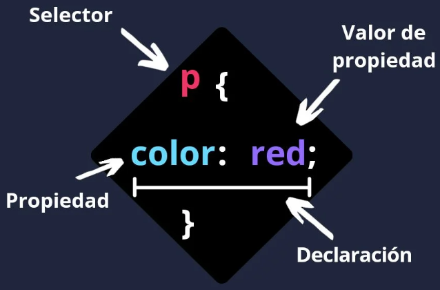

PROYECTO SITIO WEB - AÑO 2021 - PERIODO 16-01
Codificación HTML5 Aplicando Estilos CSS3
Fabio Contreras - Ingenieria de Sistemas - Grupo: 301122_17
Conceptos Preliminares
Git Software de control de versiones diseñado por Linus Torvalds, pensando en la eficiencia, la confiabilidad y compatibilidad del mantenimiento de versiones de aplicaciones cuando éstas tienen un gran número de archivos de código fuente.
Su propósito es llevar registro de los cambios en archivos de computadora incluyendo coordinar el trabajo que varias personas realizan sobre archivos compartidos en un repositorio de código
Git Hub es una forja para alojar proyectos utilizando el sistema de control de versiones Git. Se utiliza principalmente para la creación de código fuente de programas de ordenador. El software que opera GitHub fue escrito en Ruby on Rails.
Desde enero de 2010, GitHub opera bajo el nombre de GitHub, Inc.
Hojas de Estilo CSS CSS se define como Cascading Style Sheets y en español "Hojas de estilo en cascada", Es un lenguaje de hojas de estilo, es decir, te permite aplicar estilos de manera selectiva a elementos en documentos HTML.
La sintaxis de CSS de una regla CSS se define principalmente por cuatro partes, las cuales son:
1.- Selector: El elemento HTML al que le daremos estilo en CSS
2.- Declaración: Específica a cuál de las propiedades del elemento se le dará estilo
3.- Propiedades: Opciones mediante las cuales se puede dar estilo a un elemento HTML
4.- Valor de la propiedad: Especifica la apariencia de esa propiedad
